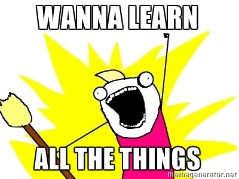

kuksenok /about /now
In response to the /now page movement and as a design alternative to an OurNows page.
Last Updated: Dec 22, 2016

there are so many things I don't know but want to know
Curriculum
- Last month I finished my first major Coursera course and got really hooked. I have since made progress on about a dozen other courses, and made a small curriculum-management system.
- You can see what it outputs here: Curriculum
- Subjects I'm exploring: music theory, sociology, comics, graphic design, cosmology, philosophy, history, creative writing, linguistics, statistics, witches and mythology, biology, urban design and architecture... learning all the things!
December of 2016 is the last month of one hell of a year. Toni Morrison reminds us:
"This is precisely the time when artists go to work. There is no time for despair, no place for self-pity, no need for silence, no room for fear. We speak, we write, we do language. That is how civilizations heal.
I know the world is bruised and bleeding, and though it is important not to ignore its pain, it is also critical to refuse to succumb to its malevolence. Like failure, chaos contains information that can lead to knowledge — even wisdom. Like art."